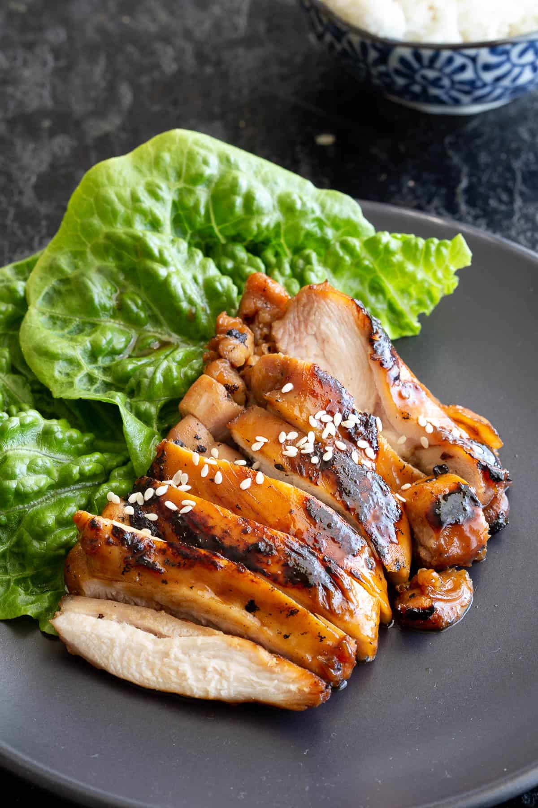

Teriyaki Chicken

Description
Teriyaki chicken is one of the most popular dishes from Japan. It\'s right up there alongside sushi and takoyaki!
Succulent chicken (usually thighs) are marinated and cooked in a glossy teriyaki sauce that reduces down as it cooks. The end result is a juicy, tender chicken in a sticky soy glaze.
The words teri (照= glazed/shiny) and yaki (焼 = grilled/fried) traditionally refer to the cooking method of grilling or frying something with a shiny, glossy sauce or glaze, rather than the dish itself.
Ingredients
For the Chicken
- 2 chicken thighs 300g / 10 oz
- 1 tbsp vegetable oil
For the marinade
- 1 tbsp soy sauce
- 1 tbsp cooking sake
- 1 tbsp mirin
- 1/2 tbsp oyster sauce
- 1/2 tbsp garlic minced
- 1/2 tsp pepper
For the sauce glaze
- 225 ml triyaki sauce (7.6 fl oz)
Instructions
- In a medium bowl, pop in your chicken thighs and add in the soy sauce, sake, mirin, oyster sauce, garlic and pepper. Cover and leave to marinate in the fridge for at least 30 minutes (or overnight).
- Add the vegetable oil to a large frying pan over high heat. Once hot, add your marinated chicken thighs and cook for 3 minutes before flipping over to the other side.
- Add your teriyaki sauce and cook for another 3 minutes. Flip the chicken every couple of minutes or so as the sauce thickens for a nice and even glaze.
- Continue to cook until the sauce sticks to the chicken and thickens (around 3-5 minutes).
- Remove from the pan and allow to sit for a couple of minutes before slicing to serve. Coat or drizzle with any leftover sauce in the pan.
- Serve hot with rice and a side of miso soup.